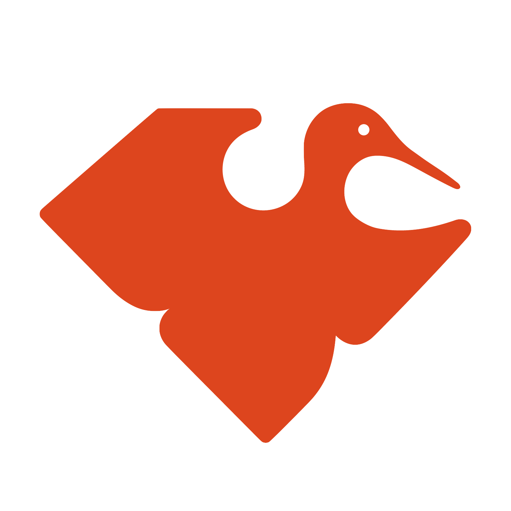

News お知らせ
2024.10.1
スポンサーシップの募集を開始しました。申込みの締め切りは 10/22 となります。スポンサーシップ募集要項をお読みの上、どうぞご検討ください！
募集枠に限りのありますRuby, Goldプランについては、申込み多数の場合抽選を実施いたします。
募集枠に限りのありますRuby, Goldプランについては、申込み多数の場合抽選を実施いたします。
2024.9.29
発表の募集を開始しました。
2024.9.24
スポンサーシップ募集要項を公開しました。
2024.8.31
Twitterアカウント @tokyork12 をよろしくお願いします
2024.8.5
東京Ruby会議12 Webサイト（仮）公開！
About 東京Ruby会議12について
東京Ruby会議12は、プログラミング言語Rubyを使ったソフトウェア開発について議論する地域Ruby会議です。東京圏の方を中心にRubyistで一堂に会し、Rubyでのソフトウェア開発・運用などの発表を中心に、知的好奇心が刺激されるカンファレンスとなればと思います。
Rubyist同士、そして東京圏に多数息づく "地域.rb" をはじめとしたRubyコミュニティ同士の交流の場となることを目指して、東京Ruby会議を開催します。楽しい一日をともに作りましょう！
Keynote Speakers 基調講演

John Hawthorn
John is a Ruby Committer and a Rails Core member, and a Staff Engineer at GitHub focusing on performance and scalability. He's based in Victoria, Canada.
RubyコミッターとRails Coreメンバーであり、GitHubにてパフォーマンスとスケーラビリティに取り組むスタッフエンジニア。カナダのビクトリア在住。


